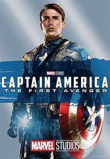
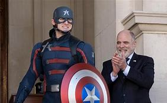
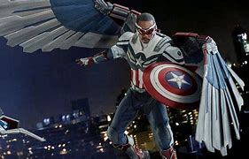

Chris Evans was the first person to portray Captain America in live action and, in the process, became one of the most well loved heroes in the MCU. He 1st appeared as Cap in "Captain America: The First Avenger" released in 2011 and the film was an origin story for Steve Rogers which pitted him against his most iconic enemy of all time ---> RED SKULL. His last appearance as Cap was at the end of Avengers: Endgame in 2019
The First Avenger film begins showing Steve as the skinny teenager who was looking to be enrolled in the United States Army but was rejected because of the amount of medical conditions he suffered with, one of them being asthma. When re-applying, he is approached by Dr Abraham Erskine and is enrolled in the army as part of the Super-Soldier program. Rogers is entered into a chamber and simultaniously injected with the Super-Soldier Serum and exposed to large amounts of radiation, and the experiment is a success. Later in the film while on a mission with his best friend Bucky, Bucky falls off the side of the moving train they just ziplined onto and seemingly dies. At the end of the film, after a long fight with Red Skull on board of a plane filled with bombs, to prevent the bombs reaching targetted capital cities across the world, Cap flies the plane straight into icy waters, freezing him in the progress, but not killing him and he is then rediscovered in the 2000's and thawed out, now living in a world over 60 years past the world he remembers.
Avengers: Endgame was the end of an era for a few MCU heroes and Steve Rogers was one of the heroes that would never be seen in live action again. After all of the Avengers are able to undo the events of Avengers: Infinity War and then go on to defeat The Mad Titan THANOS, Cap travels back in time from his present day to return the Infinity Stones to the exact point that the Avengers removed the stones from their timelines, Rogers returns to the present day much much older (Still being played by Chris Evans however). He explains to Sam Wilson that when he put the stones back, he thought about getting the life that Tony Stark told him to get (Even though it was actually the hero Black Widow who told him that) and he stayed in the past with his 1st love Peggy Carter to live a long happy life together. He then asks Sam to take over the mantle of Captain America for him, to which he accepts to do.

Wyatt Russell was the actor that portrayed John Walker in the Disney+ series "Falcon and The Winter Soldier" that happens after the events of Avengers: Endgame. Now although Rogers asked Sam Wilson to take over the mantle of Captain America, Sam did not feel like he could actually be Captain America because of the legacy that Rogers left behind, he didn't feel that he could be anywhere near good enough, partly because he was a normal human being, he didnt have any superpowers, he wasn't an enhanced human like Steve Rogers was and the story of the series depicts that fact. In the 1st episode, Sam hands over Captain America's iconic shield to a museum, in the knowledge that Captain America would only be defined by Rogers and the legacy that he created. The U.S Department of Defense however had different plans. Once the shield was handed away by Sam, the government then stepped in to buy the shield from the museum behind Sams back and revived the Captain America mantle with the "New Cap" being a very decorated U.S Army special forces Captain, Afghanistan War veteran and the 1st 3 time Medal of Honor recipient in the history of the United States, which end up being a big mistake.
Throughout the series, Walker starts to feel more and more pressure over his head and thinking that it would help, he injects himself with a flawed version of the Super-Soldier Serum given to Rogers, but without the radiation exposure, Walker's mental state quickly declines, and once his partner, Lemar Hoskins is murdered by a rebel group of enhanced humans, Walker goes crazy and goes to find the person who murdered Hoskins and proceeds to kill a member of the rebel group in public with the shield, coating it in blood! After this incident the D.o.D strips him of the shield and the mantle of Captain America.
Anthony Mackie is an African-American actor who was first introduced into the MCU in the film "Captain America: The Winter Soldier" to play Sam Wilson, a former United States Air Force Pararescue Airman. Sam gave up his active status to serve his country after his Air Force wingman died in combat, to which he then decided to help other veterans cope with PTSD (Post-Traumatic Stress Disorder). Wilson then meets the original Cap during the start of the "Captain America: The Winter Soldier" movie, and he then proceeds to return to action under his old mantle "Falcon" to aide Captain America with missions after the organisation S.H.I.E.L.D was infiltrated by Hydra.
After the events of the "Captain America: Civil War" movie, he returned to the screen by the sides of Cap, Black Widow, Scarlett Witch and the android hero called Vision. The Avengers were all defeated across the board and once Thanos had collected all of the Infinity Stones, he then caused "The Snap" which killed trillions of living life forms across the entire universe and Falcon was one of those people. After the Avengers reversed The Snap in "Avengers: Endgame" Falcon, as well as everybody who was killed because of the snap, returned to the world and all of the Avengers united to defeat Thanos thanks to Tony Stark (Iron-Man) making the sacrifice and causing his own snap that killed Thanos and all of his army, but the snap that Stark did killed him. Then at the very end of Endgame, Falcon is entrusted with the shield and the mantle of Captain America by Rogers.
When John Walker went insane and killed a man in public with the shield while wearing his Captain America uniform, Walker was stripped of the shield and mantle of Captain America. Sam then proceeded to reclaim the shield that he had previously given to a museum and took on the responsibility of being Captain America, but also still keeping his Falcon mantle simultaniously.
 Captain America">